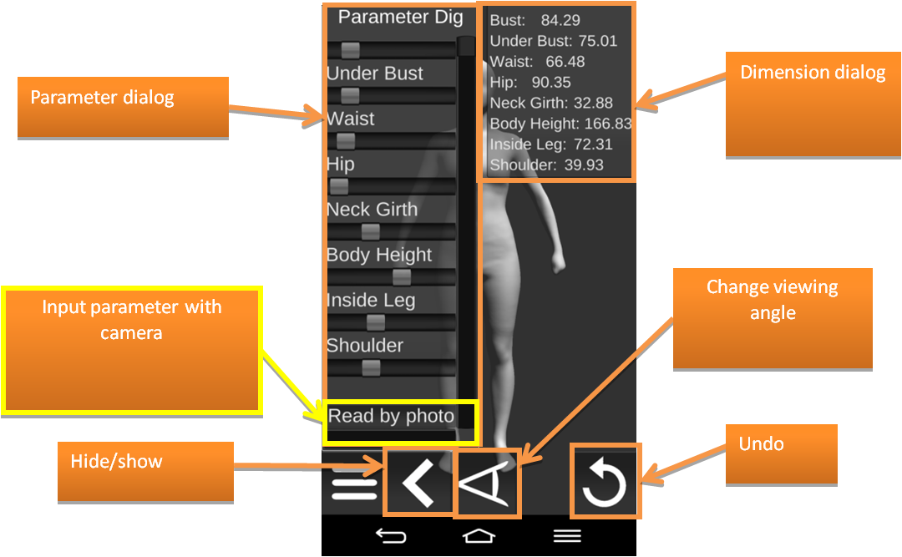
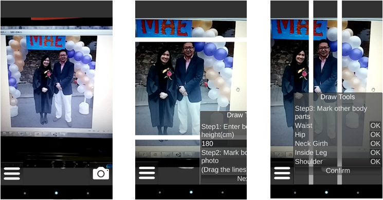

3D Human Body Generator (ver. 1.0)
Developed By: Ho-Yi Lam (Email: hoyiconnie@yahoo.com.hk)
Supervior: Charlie C.L. Wang (Email: cwang@mae.cuhk.edu.hk)
APP Download [21.4MB of APK file in ZIP]
Latest Release: 04/2015
1. Copyright
- 3D Human Body Generator is an Android APP developed by Ho-Yi Lam in the final year project of undergraduate study.
All rights about this APP are reserved by Charlie C.L. Wang at the Department of Mechanical and Automation Engineering, The Chinese University of Hong Kong.
This APP is developed on Unity Free version 4.5.5, which is licensed for any entity with annual gross revenues or budget less than US$100,000 [1].
At this moment, this APP is only delivered to primary users for academic purpose.
2. Background
- Human body generator is a parametric design tool that can generate human model with a serial of parameters (height, shoulder width, hip girth, etc.).
The generation of model is based on a database with a collection of scanned human 3D models. User can customize a human model by changing the parameters.
- The parametric tool is based on a database of realistic human bodies which are reconstructed from 3D point clouds captured by laser scanners [2] [3].
After applying the cross-parameterization technique [4] [5] to generate mesh surfaces with consistent connectivity,
3D models of human body can be analyzed and process by a statistical method [6].
3. Download & Installation
- 3D Human Body Generator Android app can be downloaded from this link: APP Download [21.4MB].
- Download the .apk file into an Android device and install it.
4. Functions
This Android APP is a parametric design tool for generating human body 3D model.
Users can start to make a new model by "New Male Model" or "New Female Model" on menu.
The new human 3D model can be exported as an .obj file by the "Export New Model" item.
The file will be saved in the external storage of the mobile device.
Obj file can be loaded by "Load File" on menu. Enter the full path of the obj file to open.
Parametric Design Tool

This is the UI of the parametric design tool. Control the sliders in the parameter dialog to change the value of the parameters which include bust, under bust, waist, hip, neck girth, body height, inside leg and shoulder. When dragging the slider, the model will deform according to the value and the dimension dialog will show the new value instantaneously.
Assistive tools include:
- Undo
- Change viewing angle from high to low
- Hide/show parameter dialog
- Real-time display parameter value
- Moveable dimension dialog
Input Values with Camera

Enter this function by "Read by photo" at the bottom of the parameter dialog. This function is to help user to measure the parameter value from photo. To use the function, user need to take a photo of a person with the parameters for the new human model. The photo should capture the whole body at the fount side of the person. Then follow these three steps to measure the values:
- Step 1: Enter body height (in cm)
- Step 2: Mark body height in photo (Drag the white lines)
- Step 3: Mark other body parts (Drag the white lines)
5. Problems
- The exported obj file does not contain new lines, so there is some problem with the file format.
This problem is mainly caused by the environment difference between Android and Unity Editor.
- The exported obj file does not show when the device connect with PC using MTP. It is a known bug in Android [7].
A solution is to reboot the device or to browse the file using the file manager in android and send it to computer.
- The accuracy of values obtained from "Input parameters with camera" function has not been clarified.
The error is mainly cause by the translation from projection values to the 3D value.
References:
[1] Unity Technologies, "Unity - Unity Pro and Unity Personal Software License Agreement 4.x", 2014.
[2] Shengjun Liu, and Charlie C.L. Wang,
"Orienting unorganized points for surface reconstruction",
Computers & Graphics, Special Issue of IEEE International Conference on Shape Modeling and Applications (SMI 2010), vol.34, no.3, pp.209-218, Arts et Metiers ParisTech, Aix-en-Provence, France, June 21-23, 2010.
[PDF] [Project Page - with Source Code]
[3] Shengjun Liu, and Charlie C.L. Wang, "Quasi-interpolation for surface reconstruction from scattered data with radial basis function", Computer Aided Geometric Design, Special Issue of 2012 Geometric Modeling and Processing (GMP) conference, June 20-22, 2012, Mount Huang, vol.29, no.7, pp.435-447, October 2012. [PDF].
[4] Tsz-Ho Kwok, Yunbo Zhang, and Charlie C.L. Wang, "Efficient optimization of common base domains for cross-parameterization", IEEE Transactions on Visualization and Computer Graphics, vol.18, no.10, pp.1678-1692, October 2012.[PDF] [Project Page - with Program].
[5] Tsz-Ho Kwok, Yunbo Zhang, and Charlie C.L. Wang,
"Constructing common base domains by cues from Voronoi diagram", Graphical Models, Special Issue of 2012 Geometric Modeling and Processing (GMP) conference, June 20-22, 2012, Mount Huang, vol.74, no.4, pp.152-163, July 2012. [PDF]
[6] Chih-Hsing Chu, Ya-Tien Tsai, Charlie C.L. Wang, and Tsz-Ho Kwok,
"Exemplar-based statistical model for semantic parametric design of human body",
Computers in Industry, vol.61, no.6, pp.541-549, August 2010. [PDF].
[7] "Issue 38282: Android MTP support does not show recent files until the device is rebooted", 2012.